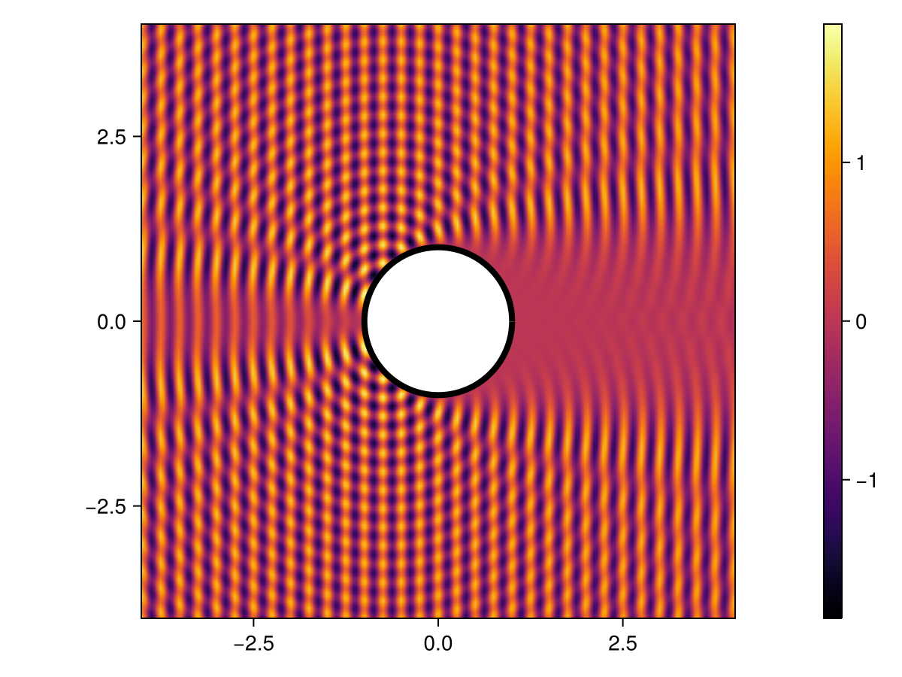

Helmholtz scattering

- Creating a geometry using the Gmsh API
- Assembling integral operators and integral potentials
- Setting up a sound-soft problem in both 2 and 3 spatial dimensions
- Using GMRES to solve the linear system
- Exporting the solution to Gmsh for visualization
In this tutorial we will show how to solve an acoustic scattering problem in the context of Helmholtz equation. We will focus on a smooth sound-soft obstacle for simplicity, and introduce along the way the necessary techniques used to handle some difficulties encountered. We will use various packages throughout this example (including of course Inti.jl); if they are not on your environment, you can install them using ] add <package> in the REPL.
In the following section, we will provide a brief mathematical description of the problem (valid in both $2$ and $3$ dimensions). We will tackle the two-dimensional problem first, for which we do not need to worry much about performance issues (e.g. compressing the integral operators, or exporting the solution to Gmsh for visualization). Finally, we present a three-dimensional example, where we will use HMatrices.jl to compress the underlying integral operators.
Sound-soft problem
This example concerns the sound-soft acoustic scattering problem. Mathematically, this means solving an exterior problem governed by Helmholtz equation (time-harmonic acoustics) with a Dirichlet boundary condition. More precisely, letting $\Omega \subset \mathbb{R}^d$ be a bounded domain, and denoting by $\Gamma = \partial \Omega$ its boundary, we wish to solve
\[ \Delta u + k^2 u = 0 \quad \text{on} \quad \mathbb{R}^d \setminus \bar{\Omega},\]
subject to Dirichlet boundary conditions on $\Gamma$
\[ u(\boldsymbol{x}) = g(\boldsymbol{x}) \quad \text{for} \quad \boldsymbol{x} \in \Gamma.\]
and the Sommerfeld radiation condition at infinity
\[ \lim_{|\boldsymbol{x}| \to \infty} \|\boldsymbol{x}|^{(d-1)/2} \left( \frac{\partial u}{\partial |\boldsymbol{x}|} - i k u \right) = 0.\]
Here $g$ is a (given) boundary datum, and $k$ is the constant wavenumber.
For simplicity, we will take $\Gamma$ circle/sphere, and focus on the plane-wave scattering problem. This means we will seek a solution $u$ of the form $u = u_s + u_i$, where $u_i$ is a known incident field, and $u_s$ is the scattered field we wish to compute.
The main reason for focusing on such a simple example is two-folded. First, it alleviates the complexities associated with the mesh generation. Second, since exact solutions are known for this problem (in the form of a series), it is easy to assess the accuracy of the solution obtained. In practice, you can use the same techniques to solve the problem on more complex geometries by providing a .msh file containing the mesh.
Using the theory of boundary integral equations, we can express $u_s$ as
\[ u_s(\boldsymbol{r}) = \mathcal{D}[\sigma](\boldsymbol{r}) - i k \mathcal{S}[\sigma](\boldsymbol{r}),\]
where $\mathcal{S}$ is the so-called single layer potential, $\mathcal{D}$ is the double-layer potential, and $\sigma : \Gamma \to \mathbb{C}$ is a surface density. This is an indirect formulation (because $\sigma$ is an auxiliary density, not necessarily physical) commonly referred to as a combined field formulation. Taking the limit $\mathbb{R}^d \setminus \bar \Omega \ni x \to \Gamma$, it can be shown that the following equation holds on $\Gamma$:
\[ \left( \frac{\mathrm{I}}{2} + \mathrm{D} - i k \mathrm{S} \right)[\sigma] = g,\]
where $\mathrm{I}$ is the identity operator, and $\mathrm{S}$ and $\mathrm{D}$ are the single- and double-layer operators. This is the combined field integral equation that we will solve. The boundary data $g$ is obtained by applying the sound-soft condition $u=0$ on $\Gamma$, from which it readily follows that $u_s = -u_i$ on $\Gamma$.
We are now have the necessary background to solve this problem in both 2 and 3 spatial dimensions. Let's load Inti.jl and setup some of the (global) problem parameters:
using Inti
k = 8π
λ = 2π / k
meshsize = λ / 5
qorder = 4 # quadrature order
gorder = 2 # order of geometrical approximationTwo-dimensional scattering
We use Gmsh API for creating .msh file containing the desired geometry and mesh. Here is a function to mesh the circle:
using Gmsh # this will trigger the loading of Inti's Gmsh extension
function gmsh_circle(; name, meshsize, order = 1, radius = 1, center = (0, 0))
try
gmsh.initialize()
gmsh.model.add("circle-mesh")
gmsh.option.setNumber("Mesh.MeshSizeMax", meshsize)
gmsh.option.setNumber("Mesh.MeshSizeMin", meshsize)
gmsh.model.occ.addDisk(center[1], center[2], 0, radius, radius)
gmsh.model.occ.synchronize()
gmsh.model.mesh.generate(1)
gmsh.model.mesh.setOrder(order)
gmsh.write(name)
finally
gmsh.finalize()
end
endgmsh_circle (generic function with 1 method)Let us now use gmsh_circle to create a circle.msh file. As customary in wave-scattering problems, we will choose a mesh size that is proportional to wavelength:
name = joinpath(@__DIR__, "circle.msh")
gmsh_circle(; meshsize, order = gorder, name)Info : Meshing 1D...
Info : Meshing curve 1 (Ellipse)
Info : Done meshing 1D (Wall 0.000216118s, CPU 0.000204s)
Info : 126 nodes 127 elements
Info : Meshing order 2 (curvilinear on)...
Info : [ 0%] Meshing curve 1 order 2
Info : [ 50%] Meshing surface 1 order 2
Info : Done meshing order 2 (Wall 0.00121544s, CPU 0.001214s)
Info : Writing '/home/lfaria/runner-integral-equations/_work/Inti.jl/Inti.jl/docs/build/examples/generated/circle.msh'...
Info : Done writing '/home/lfaria/runner-integral-equations/_work/Inti.jl/Inti.jl/docs/build/examples/generated/circle.msh'We can now import the file and parse the mesh and domain information into Inti.jl using the import_mesh_from_gmsh_file function:
Ω, msh = Inti.import_mesh_from_gmsh_file(name; dim = 2)
@show ΩDomain with 1 entity:
EntityKey(2,1) --> Inti.GeometricEntity with (dim,tag)=(2,1) and labels String[]@show mshInti.LagrangeMesh{2, Float64} containing:
126 elements of type Inti.LagrangeElement{Inti.ReferenceHyperCube{1}, 3, StaticArraysCore.SVector{2, Float64}}
1 elements of type StaticArraysCore.SVector{2, Float64}The code above will parse all entities in the name of dimension 2 as a Domain, and also import the underlying mesh (that, in this case, is projected into two dimensions by ignoring the third component). Note that in the example above, Ω is a two-dimensional domain containing a single GmshEntity which represents the disk. To extract the boundary $\Gamma = \partial \Omega$, we can use the boundary function:
Γ = Inti.boundary(Ω)Domain with 1 entity:
EntityKey(1,1) --> Inti.GeometricEntity with (dim,tag)=(1,1) and labels String[]To solve our boundary integral equation usign a Nyström method, we actually need a quadrature of our curve/surface (and possibly the normal vectors at the quadrature nodes). Once a mesh is available, creating a quadrature object can be done via the Quadrature constructor, which requires passing a mesh the domain that one wishes to generate a quadrature for:
Γ = Inti.boundary(Ω)
Γ_msh = view(msh,Γ)
Q = Inti.Quadrature(Γ_msh; qorder)In Inti.jl, you can use domain to create a view of a mesh containing only the elements in the domain. For example view(msh,Γ) will return an SubMesh type that you can use to iterate over the elements in the boundary of the disk without actually creating a new mesh. You can use msh[Γ], or collect(view(msh,Γ)) to create a new mesh containing only the elements and nodes in Γ.
The object Q now contains a quadrature (of order 4) that can be used to solve a boundary integral equation on Γ. As a sanity check, let's make sure integrating the function x->1 over Q gives an approximation to the perimeter:
Inti.integrate(x -> 1, Q) - 2π-4.046297252813247e-8With the Quadrature constructed, we now can define discrete approximation to the integral operators $\mathrm{S}$ and $\mathrm{D}$ as follows:
pde = Inti.Helmholtz(; k, dim = 2)
S, D = Inti.single_double_layer(;
pde,
target = Q,
source = Q,
compression = (method = :none,),
correction = (method = :dim, maxdist = 5 * meshsize),
)(ComplexF64[0.0026533898319544063 + 0.001046580456233058im 0.0034805563354252346 + 0.0032324412022761476im … 0.002728527958667407 + 0.0032078950572651836im 0.0019334135174574499 + 0.0010450354339482596im; 0.0011545531921793863 + 0.0010325223843597265im 0.006032767168679149 + 0.0032758934237525524im … 0.0013770109102204577 + 0.003060946159081764im 0.0008712272296526036 + 0.0010242905940836882im; … ; 0.0008712272296525736 + 0.0010242905940836655im 0.0013770109102204337 + 0.0030609461590817106im … 0.0060327671693308944 + 0.0032758934235157674im 0.001154553191924856 + 0.0010325223844565206im; 0.0019334135174574084 + 0.0010450354339482373im 0.002728527958667395 + 0.0032078950572651294im … 0.0034805563360414274 + 0.0032324412019255925im 0.0026533898317172536 + 0.0010465804563710654im], ComplexF64[-0.0003474088196428925 - 3.193002564887076e-6im -0.0010620563104253974 - 3.131075823027224e-5im … -0.0011222145701332614 - 6.768044866564956e-5im -0.0003359104404731084 - 9.862558353014844e-7im; -0.00034613794167411444 - 1.2543754208272612e-5im -0.0010583575934607512 - 2.492458454595087e-6im … -0.0012110309450514734 - 0.00021139187505503417im -0.00035862936064174657 - 2.162883701467664e-5im; … ; -0.00035862936064362825 - 2.1628837014790774e-5im -0.0012110309450540577 - 0.00021139187505548522im … -0.0010583575850597068 - 2.492467485666184e-6im -0.0003461379450700503 - 1.2543750617783251e-5im; -0.0003359104405011361 - 9.862558353837758e-7im -0.0011222145701392213 - 6.768044866600695e-5im … -0.0010620563038948045 - 3.131077067524894e-5im -0.0003474088222003963 - 3.192997687697826e-6im])There are two well-known difficulties related to the discretization of the boundary integral operators $S$ and $D$:
- The kernel of the integral operator is not smooth, and thus specialized quadrature rules are required to accurately approximate the matrix entries for which the target and source point lie close (relative to some scale) to each other.
- The underlying matrix is dense, and thus the storage and computational cost of the operator is prohibitive for large problems unless acceleration techniques such as Fast Multipole Methods or Hierarchical Matrices are employed.
Inti.jl tries to provide a modular and transparent interface for dealing with both of these difficulties, where the general approach for solving a BIE will be to first construct a (possible compressed) naive representation of the integral operator where singular and nearly-singular integrals are ignored, followed by a the creation of a (sparse) correction intended to account for such singular interactions. See single_double_layer for more details on the various options available.
We can now combine S and D to form the combined-field operator:
using LinearAlgebra
L = I / 2 + D - im * k * S630×630 Matrix{ComplexF64}:
0.525956-0.0666902im … 0.0259287-0.048593im
0.025604-0.0290296im 0.0253846-0.021918im
0.0236132-0.00782656im 0.0231248-0.00639229im
0.020117+0.000803893im 0.0194109+0.00259713im
0.0173648+0.006155im 0.0165565+0.0065015im
0.0165566+0.00650158im … 0.0157322+0.00737868im
0.0134085+0.00941233im 0.0125253+0.0100405im
0.00800312+0.0122571im 0.00709557+0.0125237im
0.00266767+0.0130468im 0.00182098+0.0129989im
-0.000378962+0.0126372im -0.00114971+0.0124229im
⋮ ⋱
0.00182098+0.0129989im 0.00266767+0.0130468im
0.00709557+0.0125237im 0.00800312+0.0122571im
0.0125253+0.0100405im 0.0134085+0.00941233im
0.0157322+0.00737868im 0.0165566+0.00650158im
0.0165565+0.0065015im … 0.0173648+0.006155im
0.0194109+0.00259713im 0.020117+0.000803893im
0.0231248-0.00639229im 0.0236132-0.00782656im
0.0253846-0.021918im 0.025604-0.0290296im
0.0259287-0.048593im 0.525956-0.0666902imwhere I is the identity matrix. Assuming an incident field along the $x_1$ direction of the form $u_i =e^{ikx_1}$, the right-hand side of the equation can be construted using:
uᵢ = x -> exp(im * k * x[1]) # plane-wave incident field
rhs = map(Q) do q
x = q.coords
return -uᵢ(x)
end630-element Vector{ComplexF64}:
-0.9999999998227967 + 1.882569028297627e-5im
-0.9999991182591593 + 0.0013279611831148279im
-0.9999694887615413 + 0.007811628894255199im
-0.9998061279873904 + 0.01969026253917802im
-0.9995580452141599 + 0.029727331660401958im
-0.9994624611177755 + 0.032783971943606605im
-0.9989675518228854 + 0.04542940022706338im
-0.997531641049351 + 0.07021841001752205im
-0.9949551167178109 + 0.10032106317741694im
-0.9925849060791077 + 0.12155329787352154im
⋮
-0.9949551167178109 + 0.10032106317741694im
-0.9975316410493507 + 0.0702184100175256im
-0.9989675518228854 + 0.04542940022706338im
-0.9994624611177754 + 0.03278397194361015im
-0.99955804521416 + 0.02972733166039841im
-0.9998061279873905 + 0.01969026253917447im
-0.9999694887615413 + 0.007811628894255199im
-0.9999991182591593 + 0.0013279611831183806im
-0.9999999998227967 + 1.882569028297627e-5imIn computing rhs above, we used map to evaluate the incident field at all quadrature nodes. When iterating over Q, the iterator returns a QuadratureNode, and not simply the coordinate of the quadrature node. This is so that you can access additional information, such as the normal vector, at the quadrature node.
We can now solve the integral equation using e.g. the backslash operator:
σ = L \ rhs630-element Vector{ComplexF64}:
-1.018224623658088 - 0.1179495417054391im
-1.017721645880051 - 0.11396001840256098im
-1.0152514769217105 - 0.09449734277559355im
-1.0108152841516322 - 0.060098901039623065im
-1.0071510545955051 - 0.03225806272810065im
-1.0060496638984289 - 0.023996053564489306im
-1.0015611317897033 + 0.009143388995397156im
-0.9930480665660066 + 0.06947515896135675im
-0.9831322216901194 + 0.13513630543780397im
-0.9763537636343438 + 0.17688238336522344im
⋮
-0.9831322216901237 + 0.13513630543780575im
-0.9930480665660052 + 0.06947515896136064im
-1.0015611317897066 + 0.009143388995400875im
-1.006049663898432 - 0.023996053564486183im
-1.0071510545955051 - 0.03225806272809752im
-1.010815284151634 - 0.0600989010396219im
-1.0152514769217098 - 0.09449734277559987im
-1.0177216458800522 - 0.11396001840254857im
-1.0182246236580859 - 0.11794954170543444imThe variable σ contains the value of the approximate density at the quadrature nodes. To reconstruct a continuous approximation to the solution, we can use single_double_layer_potential to obtain the single- and double-layer potentials, and then combine them as follows:
𝒮, 𝒟 = Inti.single_double_layer_potential(; pde, source = Q)
uₛ = x -> 𝒟[σ](x) - im * k * 𝒮[σ](x)#10 (generic function with 1 method)The variable uₛ is an anonymous/lambda function representing the approximate scattered field.
To assess the accuracy of the solution, we can compare it to the exact solution (obtained by separation of variables in polar coordinates):
using SpecialFunctions # for bessel functions
function circle_helmholtz_soundsoft(pt; radius = 1, k, θin)
x = pt[1]
y = pt[2]
r = sqrt(x^2 + y^2)
θ = atan(y, x)
u = 0.0
r < radius && return u
c(n) = -exp(im * n * (π / 2 - θin)) * besselj(n, k * radius) / besselh(n, k * radius)
u = c(0) * besselh(0, k * r)
n = 1
while (abs(c(n)) > 1e-12)
u +=
c(n) * besselh(n, k * r) * exp(im * n * θ) +
c(-n) * besselh(-n, k * r) * exp(-im * n * θ)
n += 1
end
return u
endcircle_helmholtz_soundsoft (generic function with 1 method)Here is the maximum error on some points located on a circle of radius 2:
uₑ = x -> circle_helmholtz_soundsoft(x; k, radius = 1, θin = 0) # exact solution
er = maximum(0:0.01:2π) do θ
R = 2
x = (R * cos(θ), R * sin(θ))
return abs(uₛ(x) - uₑ(x))
end
@info "maximum error = $er"[ Info: maximum error = 1.8832759999564553e-7As we can see, the error is quite small! To visualize the solution in this simple (2d) example, we could simply use Makie:
using CairoMakie
xx = yy = range(-4; stop = 4, length = 200)
vals = map(pt -> norm(pt) > 1 ? real(uₛ(pt) + uᵢ(pt)) : NaN, Iterators.product(xx, yy))
fig, ax, hm = heatmap(
xx,
yy,
vals;
colormap = :inferno,
interpolate = true,
axis = (aspect = DataAspect(), xgridvisible = false, ygridvisible = false),
)
lines!(
ax,
[cos(θ) for θ in 0:0.01:2π],
[sin(θ) for θ in 0:0.01:2π];
color = :black,
linewidth = 4,
)
Colorbar(fig[1, 2], hm)
fig
More complex problems, however, may require a mesh-based visualization, where we would first need to create a mesh for the places where we want to visualize the solution. In the 3D example that follows, we will use the Gmsh API to create a view (in the sense of Gmsh) of the solution on a punctured plane.
Three-dimensional scattering
We now consider the same problem in 3D. Unlike the 2D case, assembling dense matrix representations of the integral operators quickly becomes unfeasiable as the problem size increases. Inti adds support for compressing the underlying linear operators by wrapping external libraries. In this example, we will rely on HMatrices.jl to handle the compression.
The visualization is also more involved, and we will use instead the Gmsh API to create a view of the solution on a punctured plane. Let us begin by creating our domain containing both the sphere and the puctured plane where we will visualize the solution:
function gmsh_sphere(; meshsize, order = gorder, radius = 1, visualize = false, name)
gmsh.initialize()
gmsh.model.add("sphere-scattering")
gmsh.option.setNumber("Mesh.MeshSizeMax", meshsize)
gmsh.option.setNumber("Mesh.MeshSizeMin", meshsize)
sphere_tag = gmsh.model.occ.addSphere(0, 0, 0, radius)
xl,yl,zl = -2*radius,-2*radius,0
Δx, Δy = 4*radius, 4*radius
rectangle_tag = gmsh.model.occ.addRectangle(xl, yl, zl, Δx, Δy)
outDimTags, _ = gmsh.model.occ.cut([(2, rectangle_tag)], [(3, sphere_tag)], -1, true, false)
gmsh.model.occ.synchronize()
gmsh.model.addPhysicalGroup(3, [sphere_tag], -1, "omega")
gmsh.model.addPhysicalGroup(2, [dt[2] for dt in outDimTags], -1, "sigma")
gmsh.model.mesh.generate(2)
gmsh.model.mesh.setOrder(order)
visualize && gmsh.fltk.run()
gmsh.option.setNumber("Mesh.SaveAll", 1) # otherwise only the physical groups are saved
gmsh.write(name)
gmsh.finalize()
endgmsh_sphere (generic function with 1 method)As before, lets write a file with our mesh, and import it into Inti.jl:
name = joinpath(@__DIR__, "sphere.msh")
gmsh_sphere(; meshsize, order = gorder, name, visualize=false)
Inti.clear_entities!()
Ω, msh = Inti.import_mesh_from_gmsh_file(name; dim = 3)
Γ = Inti.boundary(Ω)Domain with 1 entity:
EntityKey(2,1) --> Inti.GeometricEntity with (dim,tag)=(2,1) and labels String[]Note that for this example we relied instead on the labels to the entities in order to extract the relevant domains Ω and Σ. We can now create a quadrature as before
Γ_msh = view(msh,Γ)
Q = Inti.Quadrature(Γ_msh; qorder = 4)73080-element Inti.Quadrature{3, Float64}:
Inti.QuadratureNode{3, Float64}([-0.4734451532020426, 0.535465971849056, 0.6993752963210281], 0.00022827493014403546, [-0.4734404030373813, 0.5354682928525197, 0.6993767883776314])
Inti.QuadratureNode{3, Float64}([-0.4611085010665634, 0.5440057944822501, 0.7010253763431926], 0.0002282772111988231, [-0.4611114574325287, 0.5440003988376322, 0.7010276669924994])
Inti.QuadratureNode{3, Float64}([-0.4586422125538417, 0.532385316907492, 0.7114865551254731], 0.0002282745145403388, [-0.4586440428829509, 0.5323886962994576, 0.71148290069442])
Inti.QuadratureNode{3, Float64}([-0.44488472221067343, 0.5410781324166787, 0.7136609706691894], 0.00011238480450969293, [-0.4448866905813992, 0.5410783735474494, 0.7136596010863843])
Inti.QuadratureNode{3, Float64}([-0.47142788108816197, 0.5228256512482473, 0.7102176039767786], 0.0001123666112702614, [-0.47142653887933816, 0.5228284488632722, 0.7102164680570796])
Inti.QuadratureNode{3, Float64}([-0.47664517055460165, 0.5476767047943127, 0.6876478388106608], 0.00011238811693075664, [-0.4766435268715887, 0.5476763241388801, 0.6876493236157055])
Inti.QuadratureNode{3, Float64}([0.7734795657864142, 0.6289394711332889, -0.07851356914391361], 0.00029116546114445755, [0.7734761675530794, 0.6289430347773162, -0.0785192793681933])
Inti.QuadratureNode{3, Float64}([0.7610689505541219, 0.643030968619001, -0.08535285859482458], 0.0002911670040174441, [0.7610738733994227, 0.6430249058307524, -0.08535531448100526])
Inti.QuadratureNode{3, Float64}([0.7685804950624229, 0.6324434476241344, -0.09643233834375013], 0.00029116798416590697, [0.7685793040355008, 0.632446212228572, -0.0964242814131237])
Inti.QuadratureNode{3, Float64}([0.755114819610695, 0.6472177964853167, -0.10445404272431782], 0.00014335753210647562, [0.7551165504837651, 0.6472161688846357, -0.10445202688217217])
⋮
Inti.QuadratureNode{3, Float64}([0.034067641593554764, -0.16002573411326476, -0.9865247643701125], 8.20647263134504e-5, [0.03406991836219493, -0.16002411193650926, -0.9865249739675751])
Inti.QuadratureNode{3, Float64}([0.036002266441425984, -0.11671210352210026, -0.9925130084961924], 8.206129444585203e-5, [0.03600407470296316, -0.11671410246326369, -0.9925127328608829])
Inti.QuadratureNode{3, Float64}([0.017210899372837395, -0.13600255457969795, -0.9905589647583228], 8.203730244346247e-5, [0.017213882398977667, -0.13600279640515686, -0.9905588935660169])
Inti.QuadratureNode{3, Float64}([0.05619733828769549, -0.1534652466014442, -0.9865546848466166], 0.0002959136958909321, [0.056194381820372286, -0.15345847040868896, -0.9865559737347152])
Inti.QuadratureNode{3, Float64}([0.05710370692657562, -0.13329539921512945, -0.9894298286206706], 0.00029591662740571724, [0.05709773400218833, -0.13330172912497532, -0.9894293798872698])
Inti.QuadratureNode{3, Float64}([0.041990309001138384, -0.13984299139621567, -0.9892828896307114], 0.0002959171267916231, [0.04199921128883824, -0.1398434710852142, -0.9892825025471512])
Inti.QuadratureNode{3, Float64}([0.042232245877574626, -0.11798127015072901, -0.9921173137587807], 0.00014570264419055243, [0.04223316304507883, -0.11798403388678026, -0.992116992943378])
Inti.QuadratureNode{3, Float64}([0.04029520371281266, -0.16128981833989092, -0.9860840763902908], 0.0001456792840080544, [0.04029706304097866, -0.16128623874390913, -0.9860846291785073])
Inti.QuadratureNode{3, Float64}([0.07273090663679406, -0.1472413395572331, -0.986422891227807], 0.00014567530181267972, [0.07272682090560367, -0.14724025747826877, -0.9864233959607291])If you pass visualize=true to gmsh_sphere, it will open a window with the current mode. This is done by calling gmsh.fltk.run(). Note that the main julia thread will be blocked until the window is closed.
Writing and reading a mesh to/from disk can be time consuming. You can avoid doing so by using import_mesh_from_gmsh_file and import_mesh_from_gmsh_model functions on an active gmsh model without writing it to disk.
We can now assemble the integral operators, indicating that we wish to compress them using hierarchical matrices:
using HMatrices
pde = Inti.Helmholtz(; k, dim = 3)
S, D = Inti.single_double_layer(;
pde,
target = Q,
source = Q,
compression = (method = :hmatrix, tol = 1e-6),
correction = (method = :dim,),
)(HMatrix of ComplexF64 with range 1:73080 × 1:73080
number of nodes in tree: 74901
number of leaves: 56176 (18768 admissible + 37408 full)
min rank of sparse blocks : 5
max rank of sparse blocks : 68
min length of dense blocks : 1225
max length of dense blocks : 1296
min number of elements per leaf: 1225
max number of elements per leaf: 20866624
depth of tree: 11
compression ratio: 22.257272
, HMatrix of ComplexF64 with range 1:73080 × 1:73080
number of nodes in tree: 74901
number of leaves: 56176 (18768 admissible + 37408 full)
min rank of sparse blocks : 7
max rank of sparse blocks : 85
min length of dense blocks : 1225
max length of dense blocks : 1296
min number of elements per leaf: 1225
max number of elements per leaf: 20866624
depth of tree: 11
compression ratio: 18.623193
)Here is how much memory it would take to store the dense representation of these matrices:
mem = 2 * length(S) * 16 / 1e9 # 16 bytes per complex number, 1e9 bytes per GB, two matrices
println("memory required to store S and D: $(mem) GB")memory required to store S and D: 170.9019648 GBEven for this simple example, the dense representation of the integral operators as matrix is already quite expensive!
It is worth mentioning that hierchical matrices are not the only way to compress such integral operators, and may in fact not even be the best for the problem at hand. For example, one could use a fast multipole method (FMM), which has a much lighter memory footprint, and is also faster to assemble. The main advantage of hierarchical matrices is that they are purely algebraic, allowing for the use of direct solver. Hierarchical matrices also tend to give a faster matrix-vector product after the (offline) assembly stage.
We will use the generalized minimal residual (GMRES) iterative solver, for the linear system. This requires us to define a linear operator L, approximating the combined-field operator, that supports the matrix-vector product. In what follows we use LinearMaps to lazily assemble L:
using LinearMaps
L = I / 2 + LinearMap(D) - im * k * LinearMap(S)73080×73080 LinearMaps.LinearCombination{ComplexF64} with 3 maps:
73080×73080 LinearMaps.ScaledMap{ComplexF64} with scale: -0.0 - 25.132741228718345im of
73080×73080 LinearMaps.WrappedMap{ComplexF64} of
73080×73080 HMatrix{ClusterTree{3, Float64}, ComplexF64}
73080×73080 LinearMaps.UniformScalingMap{Float64} with scaling factor: 0.5
73080×73080 LinearMaps.WrappedMap{ComplexF64} of
73080×73080 HMatrix{ClusterTree{3, Float64}, ComplexF64}Note that wrapping S and D in LinearMap allows for combining them in a lazy fashion. Alternatively, you can use e.g. axpy! to add two hierarchical matrices.
We can now solve the linear system using GMRES solver:
using IterativeSolvers
rhs = map(Q) do q
x = q.coords
return -uᵢ(x)
end
σ, hist =
gmres(L, rhs; log = true, abstol = 1e-6, verbose = false, restart = 100, maxiter = 100)
@show histConverged after 22 iterations.As before, let us represent the solution using IntegralPotentials:
𝒮, 𝒟 = Inti.single_double_layer_potential(; pde, source = Q)
uₛ = x -> 𝒟[σ](x) - im * k * 𝒮[σ](x)#29 (generic function with 1 method)To check the result, we compare against the exact solution obtained through a series:
using GSL
sphbesselj(l, r) = sqrt(π / (2r)) * besselj(l + 1 / 2, r)
sphbesselh(l, r) = sqrt(π / (2r)) * besselh(l + 1 / 2, r)
sphharmonic(l, m, θ, ϕ) = GSL.sf_legendre_sphPlm(l, abs(m), cos(θ)) * exp(im * m * ϕ)
function sphere_helmholtz_soundsoft(xobs; radius = 1, k = 1, θin = 0, ϕin = 0)
x = xobs[1]
y = xobs[2]
z = xobs[3]
r = sqrt(x^2 + y^2 + z^2)
θ = acos(z / r)
ϕ = atan(y, x)
u = 0.0
r < radius && return u
function c(l, m)
return -4π * im^l * sphharmonic(l, -m, θin, ϕin) * sphbesselj(l, k * radius) /
sphbesselh(l, k * radius)
end
l = 0
for l in 0:60
for m in -l:l
u += c(l, m) * sphbesselh(l, k * r) * sphharmonic(l, m, θ, ϕ)
end
l += 1
end
return u
endsphere_helmholtz_soundsoft (generic function with 1 method)We will compute the error on some point on the sphere of radius 2:
uₑ = (x) -> sphere_helmholtz_soundsoft(x; radius = 1, k = k, θin = π / 2, ϕin = 0)
er = maximum(1:100) do _
x̂ = rand(Inti.Point3D) |> normalize # an SVector of unit norm
x = 2 * x̂
return abs(uₛ(x) - uₑ(x))
end
@info "error with correction = $er"[ Info: error with correction = 1.7673653509216304e-5We see that, once again, the approximation is quite accurate. Let us now visualize the solution on the punctured plane (which we labeled as "sigma"). Since evaluating the integral representation of the solution at many points is expensive, we will use a compression method to accelerate the evaluation as well. In the example below, we use the fast-multipole method:
using FMM3D
Σ = Inti.Domain(e -> "sigma" ∈ Inti.labels(e), Inti.entities(msh))
Σ_msh = view(msh,Σ)
target = Inti.nodes(Σ_msh)
S,D = Inti.single_double_layer(;
pde,
target,
source = Q,
compression = (method = :fmm, tol=1e-4),
correction = (method = :dim, maxdist = 5 * meshsize),
)
ui_eval_msh = uᵢ.(target)
us_eval_msh = D*σ - im*k*S*σ
u_eval_msh = ui_eval_msh + us_eval_mshFinalize, we use gmsh to visualize the scattered field:
gmsh.initialize()
Inti.write_gmsh_model(msh)
Inti.write_gmsh_view!(Σ_msh, real(u_eval_msh); name="sigma real")
Inti.write_gmsh_view!(Γ_msh, x -> 0, name = "gamma real")Launch the GUI to see the results:
"-nopopup" in ARGS || gmsh.fltk.run()
gmsh.finalize()Add a gmsh view of the solution and save it:
This page was generated using Literate.jl.